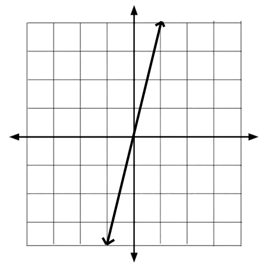
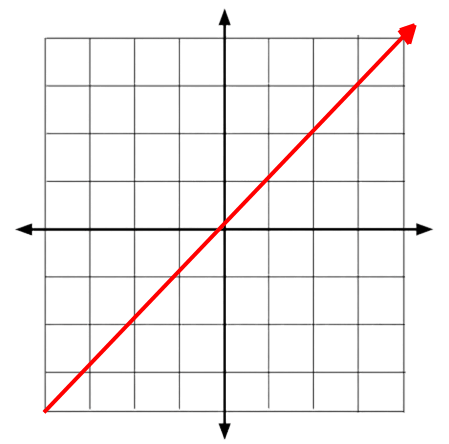
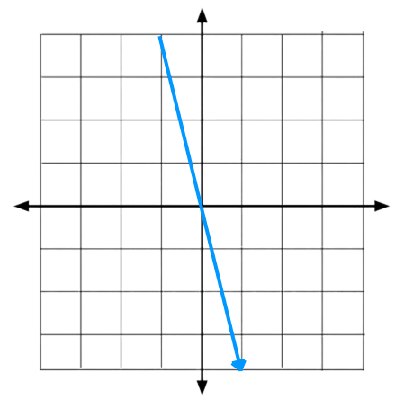
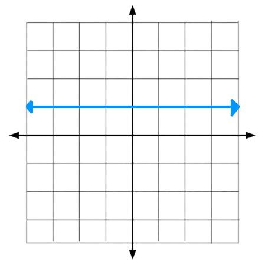
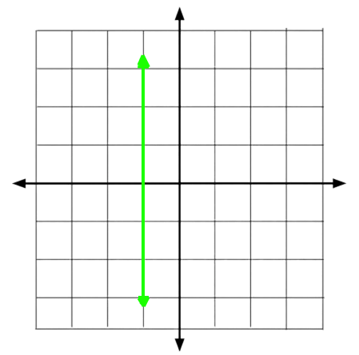
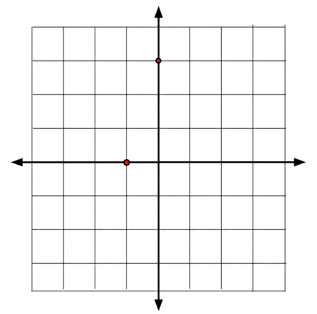
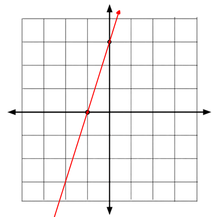

Linear functions are linear equations that represent a straight line on a graph like this example…

This line has a slope of one since it always moves up and to the right 1. Linear functions sometimes aren’t equal throughout the graph, sometimes the x value could change differently from the y value.
Examples of linear functions are these…
Linear functions are commonly written as a table…
| X | Y |
|---|---|
| 0 | 0 |
| 1 | 1 |
| 2 | 2 |
| 3 | 3 |
| 4 | 4 |
They can also be written as a slope equation as the examples that are above this text…
Sometimes, linear functions are written like this…
Linear Functions always have four types that they can land in. They can either be a positive slope, a negative slope, a zero slope, or an undefined slope.
A positive slope is a line that goes through the left, bottom side to the top, right side like this…

Since this line goes from the bottom to the top when you look at it from left to right, it is a positive slope.
A negative slope is a slope that goes from the opposite side, from the right into the left like this…

This is a negative slope because the line starts at the top, left side while it goes through the origin into the bottom, right side. You can see that both slopes are different, they are mirrored to each other.
A zero slope is a slope that has a fixed y value, this means that it is just a flat line like this…

This is a zero slope because the y value doesn’t change at all throughout the graph, this is considered a zero slope line because no difference in y is found which basically translates to a zero over a number as a fraction…
Lastly, an undefined slope is a slope that instead has a fixed x value like this…

This line has an undefined slope because the difference in x is 0 and a number divided by 0 is undefined, which means that the slope is undefined…
The four types of slopes are examples of Slope-Intercept linear functions.
Linear functions in their standard form are…
Examples include…
These can be rewritten as slope intercept linear functions. First we would have to get y on it’s own while x is on the other side. We can do this by adding/subtracting the opposite on both sides…
This slope would be negative and the slope would be -6x. This is the process of converting a standard form linear function to a slope intercept form function.
Linear functions can also be written as another form, such as the Point-Slope form…
This may look like the most complicated formula but it actually is identical to other forms of linear functions. First, there are small numbers beside some of the variables. These numbers are there to indicate that they are different from the variables that don’t have them. This is similar to the slope formula which also has these small numbers…
The Point-Slope form is actually the exact same from this. By looking at the formula, the two y’s are the y values of two dots, x being the same thing except for the x values of both dots, but m is the slope. So the two x, times the slope equals the two y values. Let's say we had two dots on a coordinate graph...

We can see that one of the dots is placed at, (-2, 0) while the other is placed at (0, 3). We can fill in the values in the formula…
Now the slope times 2 equals 3. We can figure out the slope. We can divide both sides by 2…
The slope is 3/2 which means that a solution can be found by moving up three and to the right two...
